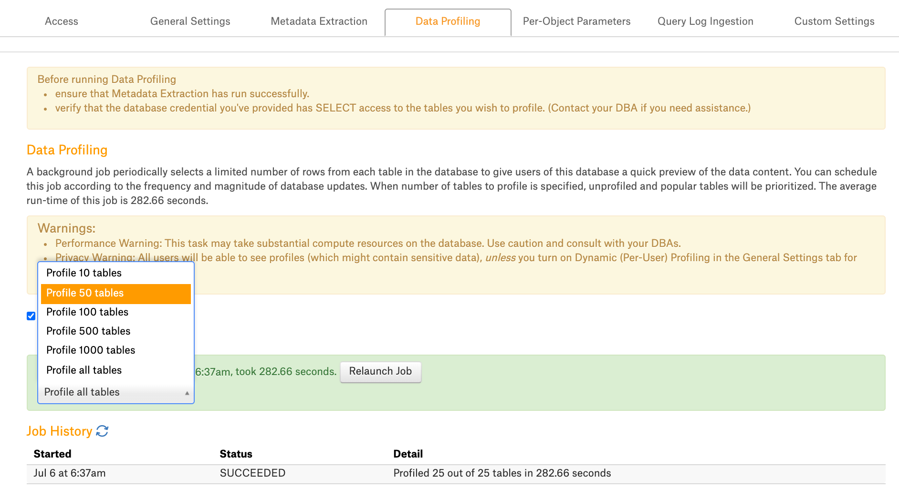

Sampling and Profiling¶
Sampling¶
Sampling is a data source operation that selects a sample of 10,000 rows from each table in the database to give catalog users a quick preview of the data content on the Table and Column catalog pages.
For Custom DB, Alation supports table Sampling based on default or custom queries:
Default query-based Sampling runs a default SELECT query against all tables selected for the Sampling operation:
Custom query-based Sampling is supported for Tables from release 2020.3. It allows overriding the default query with a custom query for individual Table objects.
The Sampling operation is available by default. To take advantage of deeper Column Profiling, enable Profiling V2 (available from 2020.3). See Profiling V2.
To add a sample of a Table or Column to the catalog:
Configure Sampling in the data source Settings page: Configure Sampling
Run bulk-sampling of multiple Tables from the Settings: Data Profiling/Sampling
Run Sampling for individual Tables and Columns on their respective catalog pages.
Configure Sampling¶
On the Custom DB Settings page, parameters for Sampling can be found on 3 of the Settings tabs:
Define parameters for Sampling on the level of specific objects:
select specific Tables to be sampled;
define if views should be skipped during profiling;
define the number of sample rows or sample values to be stored in the catalog;
specify a custom query to sample individual Tables.
Specify a Limit Query Template (available from release 2020.3) to limit the sample size.
Note
In releases before 2021.1, this tab is named Data Profiling.
From release 2021.1, this tab is named Data Sampling.
Set the number of tables to sample in each schema and launch the Sampling job. The Sampling job triggered from the Data Profiling/Sampling tab samples multiple objects at once.
Sampling of individual Tables and Columns
Individual Table samples can be run on the Samples tab of a Table object catalog page. Individual Columns profiles can be run on the Overview tab of a Column object catalog page.
Depending on the configuration you wish to apply, you may need to modify settings on all three tabs before launching the Sampling job:
Start with setting the Limit Query Template on the Custom Settings tab.
Then specify parameters on the Per-Objects Parameters tab: select specific objects to profile and add custom queries for sampling individual Tables.
And lastly, move to the Data Profiling or Data Sampling tab: schedule the Sampling job, select the number of Tables, and perform on-demand of multiple objects.
Profiling V2¶
Column Profiling is a data source operation that retrieves a data sample based on the default or custom query and performs statistical calculations on this sample. Column Profiling results can be represented on the Frequency Distribution chart for a Column.
Column Profiling and its additional features can be enabled using alation_conf and the dedicated feature flags:
alation.feature_flags.enable_profiling_v2
Default: False
Available from version: 2020.3
Description: Enables the Profiling V2 feature (Column Profiling for Custom DB)
Requires a restart: after changing the value, restart Alation Supervisor with
alation_supervisor restart all
alation.profiling.v2.distribution.show_distribution_chart
Default: False
Available from version: 2021.1
Description: Enables the display of the Frequency Distribution chart on the catalog pages of Column objects
alation.profiling.v2.distribution.max_unbatched_values
Default: 200
Available from version: 2021.1
Description: Sets the min number of unique values in a column for Alation to begin to group ranges of values for the Frequency Distribution chart
alation.profiling.v2.distribution.batch_count
Default: 50
Available from version: 2021.1
Description: sets the number of ranges to be displayed on the Frequency Distribution chart
Configure Profiling¶
When Profiling V2 is turned on, there will be additional configuration options for Column Profiling in the Custom DB Settings:
Ability to specify custom queries for profiling individual Columns
Ability to customize the default profiling queries for all Columns (available from release 2020.4)
Custom Settings¶
Custom Settings > Limit Query Template¶
Available from release 2020.3
By default, when sampling tables in the Custom DB source type, Alation attempts to read all rows in a table and then truncate the result to 10,000. This operation can put an excessive load on the database when sampled tables contain tens or hundreds of thousands of rows or more. To limit the number of sampled rows to 10,000 from the start, you can write and apply a Limit Query Template.
The Limit Query Template limits the number of rows that Alation extracts from the database for Table Sampling. Instead of extracting all and then truncating the results to 10,000, Alation will extract 10,000 rows only.
The Limit Query Template must observe the SQL conventions of the database you are creating it for. On the functional level, it is a templatized version of the SELECT statement with the LIMIT or equivalent clause.
To write a Limit Query Template, represent the SELECT statement with LIMIT (or its equivalent) as a template that includes the following 4 keywords:
COLUMNS: placeholder keyword for column names in the SELECT statement
TABLE_NAME: placeholder keyword for the table name in the SELECT statement
FILTER_CLAUSES: placeholder keyword for the SQL filter clause
ROW_SIZE: placeholder keyword for the LIMIT value.
The 4 keywords are expected by Alation and are required to be present in the template.
Examples:
Database systems which support LIMIT (e.g. Databricks Azure, Denodo):
SELECT COLUMNS FROM TABLE_NAME FILTER_CLAUSES LIMIT ROW_SIZE
Database systems which support SELECT TOP (e.g. SQL Server):
SELECT TOP ROW_SIZE COLUMNS FROM TABLE_NAME FILTER_CLAUSES
Database systems which support FETCH FIRST <N> ROWS ONLY (e.g. DB2)
SELECT COLUMNS FROM TABLE_NAME FILTER_CLAUSES FETCH FIRST ROW_SIZE ROWS ONLY
Database systems which support ROWNUM (e.g. Oracle):
SELECT * FROM ( SELECT COLUMNS FROM TABLE_NAME FILTER_CLAUSES ) WHERE ROWNUM <= ROW_SIZE
Save the template after specifying it in the field:
Test the Limit Query Template¶
It is recommended to test your Limit Query Template on one object before you run Profiling on multiple objects. To test, save the Limit Query Template on the Custom Settings tab and run Profiling for one specific object first. You can monitor the process by tailing the taskserver.log from the Alation shell:
sudo /etc/init.d/alation shell
tail -f /opt/alation/site/logs/taskserver.log
The log output will include the errors that may occur if the query is incorrect. If the template is correct and applies without issues, the taskserver.log will contain the SELECT statement with the applied limit of 10,000 rows, for example:
{"@timestamp":"2020-06-18T07:25:43.591Z","source_host":"known-griffon.alation-test.com",
"file":"CustomDBTableProfiler.java","method":"getProfileQuery","level":"INFO","line_number":"61",
"thread_name":"pool-424-thread-1","@version":1,"logger_name":"alation.profiler.CustomDBTableProfiler",
"message":"Profiling test_automation_schema_withdifftabletypes.deltatablemarks table with query :
SELECT school_id,s_id,score,status FROM test_automation_schema_withdifftabletypes.deltatablemarks
LIMIT 10001","class":"alation.profiler.CustomDBTableProfiler","mdc":{}}
{"@timestamp":"2020-06-18T07:25:43.592Z","source_host":"known-griffon.alation-test.com",
"file":"TableProfiler.java","method":"getProfileKrb","level":"INFO","line_number":"533",
"thread_name":"pool-424-thread-1","@version":1,"logger_name":"alation.profiler.TableProfiler",
"message":"test_automation_schema_withdifftabletypes.deltatablemarks being profiled with query:
SELECT school_id,s_id,score,status FROM test_automation_schema_withdifftabletypes.deltatablemarks
LIMIT 10001","class":"alation.profiler.TableProfiler","mdc":{}}
Reset the Limit Query Template¶
To clear a saved Limit Query Template, delete it from the Limit Query Template field making sure you have cleared it completely and deleted all the spaces. Click Save.
Custom Settings > Custom Queries¶
Available from release 2020.4
This configuration is available if Profiling V2 is enabled. It allows customizing the default queries for Column Profiling.
By default, to profile a column, Alation runs a default query. Default queries for Column Profiling differ depending on the data type: numeric or non-numeric. You can customize the default queries for Column Profiling on the Custom Settings tab under Custom Queries:
The default query supplied by Alation can be modified based on the user requirements and the data source type. The following default query template can be used to revert back to the default query from custom query:
Numeric columns:
SELECT MIN({column_name}) AS MIN, MAX({column_name}) AS MAX, AVG({column_name}) AS MEAN, (COUNT(*) - COUNT({column_name})) AS "#NULL", (CASE WHEN COUNT(*) > 0 THEN ((COUNT(*) - COUNT({column_name})) * 100.0 / COUNT(*)) ELSE 0.0 END) AS "%NULL" FROM {schema_name}.{table_name};Non-numeric columns:
SELECT ((SUM(CASE WHEN {column_name} IS NULL THEN 1 ELSE 0 END))) AS "#NULL", (CASE WHEN COUNT(*) > 0 THEN ((((SUM(CASE WHEN {column_name} IS NULL THEN 1 ELSE 0 END))) * 100.0 / count(*)) ) ELSE 0.0 END ) AS "%NULL", ((SUM(CASE WHEN {column_name} = '' THEN 1 ELSE 0 END)) ) AS "#EMPTY", (CASE WHEN COUNT(*) > 0 THEN (((SUM(CASE WHEN {column_name} = '' THEN 1 ELSE 0 END)) * 100.0 / count(*))) ELSE 0.0 END) AS "%EMPTY" FROM {schema_name}.{table_name};Important
The Profiling queries must contain the
{column_name},{schema_name}, and{table_name}variables. Users must check the compatibility of the default query based on the database type and modify it if required.
The default Profiling query calculates the Profiling stats that are displayed on the Overview tab of the Column catalog page. When you customize the query, you can also customize the statistics that should be calculated and displayed:
Per-Object Parameters¶
On the Per-Object Parameters tab, you can select Sampling and Profiling options for each available level of the data object hierarchy (Schema > Table > Column) in a data source. On each of these levels, the Profiling parameters will slightly differ. Click the name of a Schema or Table to go down to the lower object level:
Profile? - sets objects to be included into Profiling. By default, all are selected. Clear checkboxes for objects you wish to exclude. Available at the Schema and Table levels.
Max rows to Scan - a read-only parameter available for your information. Appears on the Schema and Table levels. For each table selected for Profiling, Alation only samples 10,000 random or top rows. Note that for the Custom DB, Alation attempts to read all rows and then truncate the result to 10,000 unless the Limit Query Template has been applied.
Max rows to Store - sets the max number of rows to be stored for a table. Available on the Schema and Table level. If defined on the Schema level, the value is propagated to all tables in this Schema. If defined on the Table level, the setting applies to this specific table only. Default: 100. Click the number for a specific object to edit.
Skip Views - allows skipping views during Profiling. Selected by default. Applies at the Schema level.
Profiling Query (Sampling Query) - Available at the Table level from release 2020.3 and at the Column level from release 2020.4. See Custom Query-Based Sampling for Tables and Custom Query-Based Profiling for Columns below.
Max values to Store - allows to set the number of column values to be stored for a sample. Available at the Column level. Click the number for a specific column to edit.
Custom Query-Based Sampling for Tables¶
Available from release 2020.3
You can specify a custom query for profiling individual tables:
On the Per-Object Parameters tab, navigate to the table level of your data source by clicking the name of a Schema.
Locate the table for which you wish to provide a custom query. For this table, in the column Profiling Query or Sampling Query, click the Edit icon to open the query editor. The name of the column - Profiling Query or Sampling Query - depends on the Alation version:
In the query editor that opens, provide the query and Save.
The next Sampling job you run will use the saved custom query to profile this specific table.
Note
There is no SQL validation for the custom profiling queries. If the query is incorrect, Alation will throw an error during profiling this table which will be logged in the Profiling History. It is recommended to test run and troubleshoot the query in Compose before saving it in the catalog and running the Profiling job.
Table Sampling Settings Priority¶
If you have provided both custom queries for specific tables and the Limit Query Template in Custom Settings, then the Sampling job will apply:
The custom queries to the tables which have them specified;
The Limit Query Template to the rest of the profiled tables.
If you have provided custom queries for specific tables but did not use the Limit Query Template, then the Sampling job will apply:
The the custom queries to the tables which have them specified;
The default query to the rest of the sampled tables.
Custom Query-Based Profiling for Columns¶
Available from release 2020.4
Requires Profiling V2 to be turned on.
You can specify a custom query for profiling individual columns:
On the Per-Object Parameters tab, navigate to the column by clicking Datasource > Schema > Table > Column.
Locate the column you wish to provide a query for. For this column, in the Profiling Query column, click the Edit icon.
In the query editor that opens, provide the query and click Save:
The next Column Profiling job you run will use the saved custom query to profile this specific column.
There is no SQL validation for the custom profiling queries. If the query is incorrect, Alation will throw an error during profiling this table which will be logged in the Profiling History. It is recommended to test run and troubleshoot the query in Compose before saving it in the catalog and running the Profiling job.
Data Profiling/Sampling¶
After you have specified and tested the desired Profiling/Sampling settings, you can launch the Sampling job on the data source Settings > Data Profiling or Data Sampling tab of the Settings:
Releases before 2021.1: this tab is named Data Profiling
2021.1 and newer: this tab is named Data Sampling
Note
You can also run Profiling for individual Tables and Columns on their respective catalog pages:
Catalog page of a Table object > Samples tab
Catalog Page of a Column object > Overview tab.
Sampling can be run on demand or as a scheduled job. If you decide on scheduling the Sampling job, please note that it can occupy significant resources on the database. Consult your DBAs about the optimal schedule for Sampling.
To perform Sampling of multiple objects:
Open Settings > Data Profiling or Data Sampling.
By default, Sampling is set to be launched on demand. If you wish to set a schedule, clear the Disable automatic profiling (or Disable automatic sampling) checkbox to reveal the scheduling fields.
To set a schedule, in the corresponding fields of the schedule section, specify values for week, day and time.
Note
To turn off the scheduling, select the Disable automatic profiling checkbox.
Next, set the number of tables to be sampled by selecting a value in the dropdown list on top of the Job History table. By default, all tables are sampled. When a specific number of tables is selected, unprofiled and popular tables are prioritized:
Click the Launch Job Now! or Relaunch Job to start Data Profiling.
Note
Launch Job Now! is the label when the profiling job has never been run before. After the first use it changes to Relaunch Job.
The results of the Sampling job are logged in the Job History table at the bottom of the page.
Note
Detailed log for the Sampling job can be found in the taskserver.log file at /opt/alation/site/logs from the Alation shell.
Individual Column Profiling¶
Individual columns can be profiled by catalog users on their respective catalog pages. This operation requires that users authenticate against the database when Dynamic Profiling is enabled for the data source. For help authenticating against the database, see Working with Data Source Connections.
To perform individual column profiling:
Open the catalog page of a specific column.
Depending on whether or not Profiling V2 is enabled on the instance, the column profiling actions will differ.
Default Column Profiling¶
On the Overview tab, click Run Profile. This retrieves a new default profile for the Column based on the default or custom profiling query.
Refresh the page to view the results.
Profiling V2 (Deep Column Profiling)¶
On the Overview tab of the Column Catalog page, click the Run Profile button:
Click the Refresh Page button to view the new profile:
The Profiling information such as Profiling Info, Distribution and Full Profile Values will be displayed:
Profiling Info¶
The following statistics are calculated during Column Profiling by executing the default profiling query:
Numeric data types
Profiling information: Min, Max, Mean, #Null, and %Null
Non-Numeric data types
Profiling Information - #Null and %Null
Frequency Distribution Chart¶
The Frequency Distribution chart is a visual representation of frequency for column values.
Version 2020.4
The Frequency Distribution chart is displayed when the Profiling V2 feature is enabled (alation.feature_flags.enable_profiling_v2 = True) and draws a bar for each column value:
From version 2021.1
The presence of the Frequency Distribution chart is controlled by a separate alation_conf parameter alation.profiling.v2.distribution.show_distribution_chart. It needs to be set to True in addition to the parameter alation.feature_flags.enable_profiling_v2.
There are 2 additional parameters that allow customizing the appearance of the Frequency Distribution Chart:
alation.profiling.v2.distribution.max_unbatched_values
alation.profiling.v2.distribution.batch_count
The Frequency Distribution chart will display a column (value range) for each bucket of values formed on the basis of these parameters.
Set alation.profiling.v2.distribution.max_unbatched_values to the number of unique values that should be present in a column for Alation to start forming value ranges for the Distribution chart. This parameter “checks” how many distinct values are in the column. Alation only starts creating ranges of values when the number of distinct values in a column >= the value of this parameter. Otherwise, it draws a bar for each distinct value.
Set alation.profiling.v2.distribution.batch_count to the number of ranges of values to be displayed on the chart.
Note
For example, if a column has 1,000 distinct values, then Alation will form equal value ranges after sorting the column in the ascending order and based on the calculation of
1,000/distribution.batch_count.With the default value of
alation.profiling.v2.distribution.batch_count = 50, each value range will represent 20 (1,000/50) distinct values: 1-20, 21-40, 41-60, etc.
Explore Frequency Distribution Chart¶
You can explore the Frequency Distribution Chart by using the interactive controls on top right of the chart area:
Zoom In: click the Plus icon to zoom in
Zoom Out: click the Minus icon to zoom out
Select and resize: click the Magnifying Glass icon and then select an area on the chart to display this area only
Move left and right: click the Hand icon to select the Move mode, and then place the cursor onto the chart area and drag left or right
Reset: click the Home icon to reset the chart